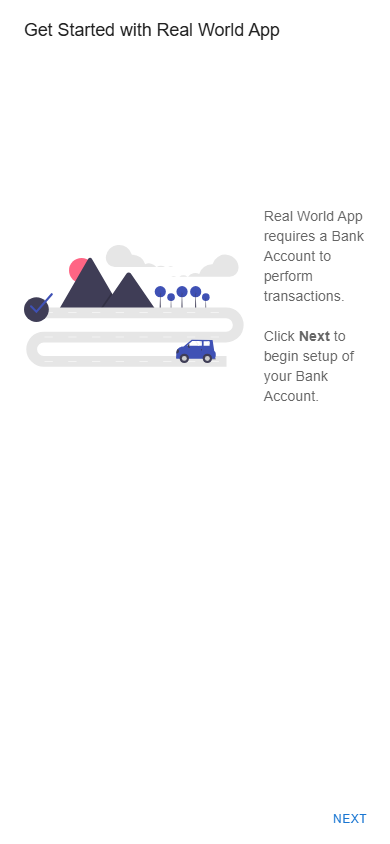

Proof Gates
artifacts100%required files present
before controlyesexpected failure observed
verification100%assertions pass
patch relevanceyestouches top candidate
run duration92.8scleanup passed
Forensic Repo Surgeon validation dossier
Capture a newly created mobile user's onboarding dialog where the action row and content can overflow horizontally. This page is generated from artifacts only; raw files are linked for audit.

src/containers/UserOnboardingContainer.tsxOpus 4.7 ran inside the target repository and authored a candidate patch using Read, Glob, Grep, and Edit tools. The deterministic verifier evaluated this patch against the same gates as the fixture above.
This diff was authored by Claude Code (claude-opus-4-7) inside the target repository. The same deterministic verifier evaluated it against the same gates as the fixture patch above.
diff --git a/src/containers/UserOnboardingContainer.tsx b/src/containers/UserOnboardingContainer.tsx
index d6b1a28..64ad053 100644
--- a/src/containers/UserOnboardingContainer.tsx
+++ b/src/containers/UserOnboardingContainer.tsx
@@ -111,11 +111,12 @@ const UserOnboardingContainer: React.FC<Props> = ({ authService, bankAccountsSer
)}
</Box>
</DialogContent>
- <DialogActions>
- <Grid container justifyContent="space-between">
- <Grid item>
+ <DialogActions style={{ flexDirection: "column", alignItems: "stretch" }}>
+ <Grid container direction="column" spacing={1}>
+ <Grid item xs={12}>
<Button
- style={{ paddingRight: "80%" }}
+ fullWidth
+ variant="outlined"
onClick={/* istanbul ignore next */ () => sendAuth("LOGOUT")}
color="secondary"
data-test="user-onboarding-logout"
@@ -123,9 +124,15 @@ const UserOnboardingContainer: React.FC<Props> = ({ authService, bankAccountsSer
Logout
</Button>
</Grid>
- <Grid item>
+ <Grid item xs={12}>
{!userOnboardingState.matches("stepTwo") && (
- <Button onClick={() => nextStep()} color="primary" data-test="user-onboarding-next">
+ <Button
+ fullWidth
+ variant="contained"
+ onClick={() => nextStep()}
+ color="primary"
+ data-test="user-onboarding-next"
+ >
{userOnboardingState.matches("stepThree") ? "Done" : "Next"}
</Button>
)}
Each turn shows what Opus 4.7 said and what tools it called. Tool calls are the substance: Read, Glob, Grep for understanding; Edit for the candidate patch.
D:/Repo/ALL HACKATHONS/Cerebral Valley & Anthropic - Built with Opus 4.7 Claude Code hackathon/.surgeon-targets/cypress-realworld-app/src/containers/UserOnbo...Now I can see the bug. The Logout button has `paddingRight: "80%"` which causes horizontal overflow, and the buttons are laid out side-by-side in a Grid with `space-between`. For the verifier to pass, both buttons need to be ≥300px wide on a 390px viewport, which means they must stack vertically and take full width. Let me make the minimal fix:
D:/Repo/ALL HACKATHONS/Cerebral Valley & Anthropic - Built with Opus 4.7 Claude Code hackathon/.surgeon-targets/cypress-realworld-app/src/containers/UserOnbo...I edited `src/containers/UserOnboardingContainer.tsx` in the `<DialogActions>` block. The original Logout button had `paddingRight: "80%"` which caused horizontal overflow on a 390px viewport, and the two buttons sat side-by-side via `Grid justifyContent="space-between"` so neither could reach the required 300px width. I replaced this with a vertical stack (`direction="column"`, `xs={12}`, `fullWidth`) so each button spans the dialog width and easily clears the 300px-wide assertion while staying inside the viewport, with no horizontal overflow and no overlap.
This section reports the machine that produced this recorded run. It does not validate the reviewer's current machine.
# Repair Hypothesis Case: `crwa-mobile-onboarding-dialog` ## Evidence Read - Before screenshot: `./artifacts/crwa-mobile-onboarding-dialog/failure.png` - Browser trace: `./artifacts/crwa-mobile-onboarding-dialog/trace.zip` - DOM snapshot: `./artifacts/crwa-mobile-onboarding-dialog/dom-snapshot.json` - Accessibility tree: `./artifacts/crwa-mobile-onboarding-dialog/ax-tree.json` ## Localization Hypothesis The highest-confidence source candidate is `src/containers/UserOnboardingContainer.tsx` with score `475`. - Matches data-test hooks found in the captured DOM. - File path/name matches the case vocabulary. ## Root-Cause Hypothesis The onboarding dialog in src/containers/UserOnboardingContainer.tsx (top candidate, matching captured DOM data-test hooks) likely uses a fixed width or non-responsive layout for its content/action row (e.g., a fixed min-width, large padding, or a Dialog/Button row without flex-wrap or max-width: 100%), causing horizontal overflow at narrow mobile widths. ## Patch Hypothesis Constrain the dialog within the viewport by setting a responsive max-width (e.g., maxWidth="xs" or width: 100% with boxSizing) on the Dialog/Paper, and allow the action row to wrap (flex-wrap: wrap) or shrink (min-width: 0) inside UserOnboardingContainer.tsx, so both the content text and DialogActions buttons fit within 390px. Changed files: - `src/containers/UserOnboardingContainer.tsx` ## Verification Evidence - Before-state negative control: `passing` - Verification status: `passing` - pass: onboarding dialog is visible - pass: logout button is visible - pass: next button is visible - pass: logout button is within the mobile viewport - pass: next button is within the mobile viewport - pass: logout button uses mobile touch width - pass: next button uses mobile touch width - pass: onboarding action buttons do not overlap - pass: onboarding step one does not introduce horizontal overflow - pass: no unexpected console errors appear during onboarding verification ## Truth Boundary This hypothesis is not proof by itself. The proof is the passing verification artifact plus the before/after browser evidence. - Residual risk: Other dialogs sharing the same Dialog/Paper styles could be affected if global styles are changed instead of local ones. - Residual risk: Wrapping the action row may alter button order/visual hierarchy on small screens. - Residual risk: Console errors (6) and xstate transient-transition warnings are unrelated here but may mask other onboarding state issues. - Residual risk: Screenshot alone cannot confirm exact overflow source; runtime inspection of computed styles is needed. - Residual risk: Fix may not address overflow if it originates from a child component (e.g., TransactionItem) embedded in the dialog.
# Reasoning Boundary Case: `crwa-mobile-onboarding-dialog` Provider: `anthropic-messages-api` Live model used: `yes` Model: `claude-opus-4-7` Request id: `req_011CaSTXBAAadx5QG7ahq7xF` Latency: `13234ms` Usage: `input 1100 / output 790` Intended model boundary: `claude-code-or-anthropic-api` This recorded run used the Anthropic Messages API to generate the reasoner diagnosis from summarized evidence artifacts. ## Truth Boundary The reasoner proposes and explains. Deterministic verification, doctor, run timeline, and scorecard decide acceptance. ## Evidence References - `./artifacts/crwa-mobile-onboarding-dialog/failure.png` - `./artifacts/crwa-mobile-onboarding-dialog/trace.zip` - `./artifacts/crwa-mobile-onboarding-dialog/console.ndjson` - `./artifacts/crwa-mobile-onboarding-dialog/network.ndjson` - `./artifacts/crwa-mobile-onboarding-dialog/ax-tree.json` - `./artifacts/crwa-mobile-onboarding-dialog/dom-snapshot.json` - `./artifacts/crwa-mobile-onboarding-dialog/candidates.json` - `./artifacts/crwa-mobile-onboarding-dialog/patch.diff` - `./artifacts/crwa-mobile-onboarding-dialog/verify.json` ## Top Source Candidate - `src/containers/UserOnboardingContainer.tsx` score `475` - Matches data-test hooks found in the captured DOM. - File path/name matches the case vocabulary. ## Diagnosis - Symptom: On iPhone 13 viewport (390x844) at /signup, a newly created user's onboarding dialog renders with its content and action row overflowing horizontally beyond the viewport. - Likely root cause: The onboarding dialog in src/containers/UserOnboardingContainer.tsx (top candidate, matching captured DOM data-test hooks) likely uses a fixed width or non-responsive layout for its content/action row (e.g., a fixed min-width, large padding, or a Dialog/Button row without flex-wrap or max-width: 100%), causing horizontal overflow at narrow mobile widths. - Patch hypothesis: Constrain the dialog within the viewport by setting a responsive max-width (e.g., maxWidth="xs" or width: 100% with boxSizing) on the Dialog/Paper, and allow the action row to wrap (flex-wrap: wrap) or shrink (min-width: 0) inside UserOnboardingContainer.tsx, so both the content text and DialogActions buttons fit within 390px. ## Verification Plan - Reload /signup at 390x844 as a new user and confirm the onboarding dialog is fully visible with no horizontal scroll. - Check that document.scrollingElement.scrollWidth <= viewport width while the dialog is open. - Verify the action row buttons remain tappable and wrap rather than clipping. - Re-run at a wider viewport (e.g., 1280px) to confirm no regression in desktop layout. - Inspect verify.json/patch.diff outputs to confirm the change is scoped to UserOnboardingContainer.tsx. ## Residual Risks - Other dialogs sharing the same Dialog/Paper styles could be affected if global styles are changed instead of local ones. - Wrapping the action row may alter button order/visual hierarchy on small screens. - Console errors (6) and xstate transient-transition warnings are unrelated here but may mask other onboarding state issues. - Screenshot alone cannot confirm exact overflow source; runtime inspection of computed styles is needed. - Fix may not address overflow if it originates from a child component (e.g., TransactionItem) embedded in the dialog.
# Evidence Integrity Manifest Case: `crwa-mobile-onboarding-dialog` Generated at: `2026-04-26T13:26:20.980Z` Bundle fingerprint: `196985a0988cfab085249acca57d52f705ccda649c4466aa858b0ab2b5d7fbea` This is an unsigned SHA-256 integrity map. It helps compare copies of the package or case artifacts, but it is not independent signed provenance. ## Review Order 1. Compare `./artifacts/crwa-mobile-onboarding-dialog/failure.png` and `./artifacts/crwa-mobile-onboarding-dialog/success.png`. 2. Read `./artifacts/crwa-mobile-onboarding-dialog/reasoner.md`, `./artifacts/crwa-mobile-onboarding-dialog/PR.md`, and `./artifacts/crwa-mobile-onboarding-dialog/scorecard.json`. 3. Use the hashes below to compare this artifact set against another copy. ## Hashed Files - `axTree` -> `./artifacts/crwa-mobile-onboarding-dialog/ax-tree.json` sha256 `79ab467d9e5ddcb8dcea28992bfe85c808501b1a449d0e7cb75706a847968943` size `65202` - `beforeVerify` -> `./artifacts/crwa-mobile-onboarding-dialog/before-verify.json` sha256 `cb4581f7f31b9f240fcc8728d594190e2f5bab43288853780cea031b73872542` size `3011` - `candidates` -> `./artifacts/crwa-mobile-onboarding-dialog/candidates.json` sha256 `b8b27b69d612292b55bd887cb3f1df0142aa1fd5a03efc7502c24051453306cf` size `49197` - `console` -> `./artifacts/crwa-mobile-onboarding-dialog/console.ndjson` sha256 `851d990a89c4fe5cec1b1036ee5bbd4e21b846e2e1d9b69d87e46dd39569a4a8` size `7236` - `doctor` -> `./artifacts/crwa-mobile-onboarding-dialog/doctor.json` sha256 `39c676673f741278feecbe6f56933185466a2bb83cdc4cab85f4afbee7f3f697` size `2302` - `domSnapshot` -> `./artifacts/crwa-mobile-onboarding-dialog/dom-snapshot.json` sha256 `a8e7344b30e7b466a98fce621805ccd5112aa025bacf329833b1d0a60a15adeb` size `690391` - `screenshot` -> `./artifacts/crwa-mobile-onboarding-dialog/failure.png` sha256 `6d2ecc08d42d88fcb19906fb5b545cff7ebd1a3eb39be5d9e70b2800a7810241` size `21415` - `hypothesis` -> `./artifacts/crwa-mobile-onboarding-dialog/hypothesis.md` sha256 `241ff6b415f00fbc94403c6c17d3fd1082b3c7a68e716a83814a2de6a41f21ff` size `2781` - `input` -> `./artifacts/crwa-mobile-onboarding-dialog/input.json` sha256 `245c3345d5f143551c6931e67792cb0c2512f80d86d1e44941b8c53d6e261d13` size `3392` - `network` -> `./artifacts/crwa-mobile-onboarding-dialog/network.ndjson` sha256 `f27f314a3691506e538a90c8264776dd58bf49fe0363714c3c583b801461d2ac` size `15816` - `patch` -> `./artifacts/crwa-mobile-onboarding-dialog/patch.diff` sha256 `e80bc4af755e7140950b2b4855883284417f7614d2705d91a00d860d92c0f5b1` size `3868` - `report` -> `./artifacts/crwa-mobile-onboarding-dialog/PR.md` sha256 `2ab24299e528e0d476d9408bf09d7571e5b461046e756813fc1beed0db28c735` size `4661` - `reasoner` -> `./artifacts/crwa-mobile-onboarding-dialog/reasoner.json` sha256 `66388de1ff09e4fd5a22bdc8a9f0c20ab74bca75cba64809928f369a459a1123` size `3631` - `reasonerReport` -> `./artifacts/crwa-mobile-onboarding-dialog/reasoner.md` sha256 `5b4329fdf5e37bb30a48fe1b6b999b13301ceabd5e171849583a610ca4424ef2` size `3311` - `redactionReport` -> `./artifacts/crwa-mobile-onboarding-dialog/redaction-report.json` sha256 `87da8a9bef5b508166d4a9eb587a004ca5c0b92bed7063efa64e1036410edc24` size `219` - `scorecard` -> `./artifacts/crwa-mobile-onboarding-dialog/scorecard.json` sha256 `64445b22a9b2057b405cd3c724a6ae1571c85ae36b1f130f42ff89063b77e709` size `4208` - `success` -> `./artifacts/crwa-mobile-onboarding-dialog/success.png` sha256 `abf2a0d373a7fcaa85a990ccf3a452dcbb1eb2ce410cd246d2e8eb7f3aafae87` size `23802` - `trace` -> `./artifacts/crwa-mobile-onboarding-dialog/trace.zip` sha256 `0cd145b6eda83bdff5fba8519e43fba643c65ce443de16877f09f68938187c20` size `1843705` - `verify` -> `./artifacts/crwa-mobile-onboarding-dialog/verify.json` sha256 `b022f95987643cf0158ace4b45de528ae282de0601391f5cf4a50ec0e3dc4e52` size `2525`
./artifacts/crwa-mobile-onboarding-dialog/failure.png./artifacts/crwa-mobile-onboarding-dialog/trace.zip./artifacts/crwa-mobile-onboarding-dialog/console.ndjson./artifacts/crwa-mobile-onboarding-dialog/network.ndjson./artifacts/crwa-mobile-onboarding-dialog/ax-tree.json./artifacts/crwa-mobile-onboarding-dialog/dom-snapshot.json./artifacts/crwa-mobile-onboarding-dialog/candidates.json./artifacts/crwa-mobile-onboarding-dialog/patch.diff./artifacts/crwa-mobile-onboarding-dialog/verify.jsondiff --git a/src/containers/UserOnboardingContainer.tsx b/src/containers/UserOnboardingContainer.tsx
index d6b1a28..52b66f0 100644
--- a/src/containers/UserOnboardingContainer.tsx
+++ b/src/containers/UserOnboardingContainer.tsx
@@ -4,7 +4,6 @@ import {
Box,
useTheme,
useMediaQuery,
- Grid,
Dialog,
DialogActions,
DialogContent,
@@ -77,12 +76,30 @@ const UserOnboardingContainer: React.FC<Props> = ({ authService, bankAccountsSer
{userOnboardingState.matches("stepThree") && "Finished"}
</DialogTitle>
<DialogContent data-test="user-onboarding-dialog-content">
- <Box display="flex" alignItems="center" justifyContent="center">
+ <Box
+ display="flex"
+ alignItems="center"
+ justifyContent="center"
+ flexDirection={fullScreen ? "column" : "row"}
+ textAlign={fullScreen ? "center" : "left"}
+ gap={fullScreen ? 2 : 0}
+ sx={{
+ "& svg": {
+ maxWidth: "100%",
+ height: "auto",
+ },
+ }}
+ >
{userOnboardingState.matches("stepOne") && (
<>
<NavigatorIllustration />
<br />
- <DialogContentText style={{ paddingLeft: 20 }}>
+ <DialogContentText
+ style={{
+ paddingLeft: fullScreen ? 0 : 20,
+ paddingTop: fullScreen ? 12 : 0,
+ }}
+ >
Real World App requires a Bank Account to perform transactions.
<br />
<br />
@@ -101,7 +118,12 @@ const UserOnboardingContainer: React.FC<Props> = ({ authService, bankAccountsSer
<>
<PersonalFinance />
<br />
- <DialogContentText style={{ paddingLeft: 20 }}>
+ <DialogContentText
+ style={{
+ paddingLeft: fullScreen ? 0 : 20,
+ paddingTop: fullScreen ? 12 : 0,
+ }}
+ >
You're all set!
<br />
<br />
@@ -112,25 +134,28 @@ const UserOnboardingContainer: React.FC<Props> = ({ authService, bankAccountsSer
</Box>
</DialogContent>
<DialogActions>
- <Grid container justifyContent="space-between">
- <Grid item>
- <Button
- style={{ paddingRight: "80%" }}
- onClick={/* istanbul ignore next */ () => sendAuth("LOGOUT")}
- color="secondary"
- data-test="user-onboarding-logout"
- >
- Logout
+ <Box
+ display="flex"
+ flexDirection={fullScreen ? "column-reverse" : "row"}
+ justifyContent="space-between"
+ alignItems={fullScreen ? "stretch" : "center"}
+ gap={2}
+ width="100%"
+ >
+ <Button
+ fullWidth={fullScreen}
+ onClick={/* istanbul ignore next */ () => sendAuth("LOGOUT")}
+ color="secondary"
+ data-test="user-onboarding-logout"
+ >
+ Logout
+ </Button>
+ {!userOnboardingState.matches("stepTwo") && (
+ <Button fullWidth={fullScreen} onClick={() => nextStep()} color="primary" data-test="user-onboarding-next">
+ {userOnboardingState.matches("stepThree") ? "Done" : "Next"}
</Button>
- </Grid>
- <Grid item>
- {!userOnboardingState.matches("stepTwo") && (
- <Button onClick={() => nextStep()} color="primary" data-test="user-onboarding-next">
- {userOnboardingState.matches("stepThree") ? "Done" : "Next"}
- </Button>
- )}
- </Grid>
- </Grid>
+ )}
+ </Box>
</DialogActions>
</Dialog>
);